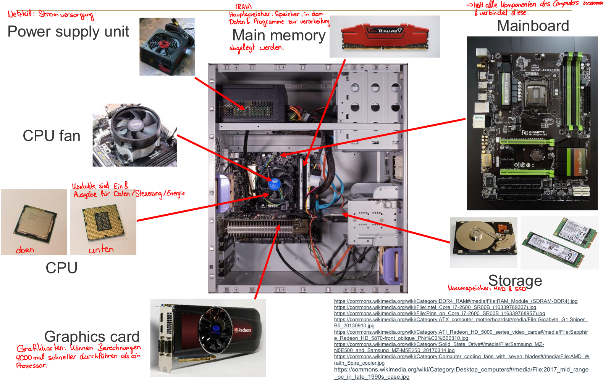
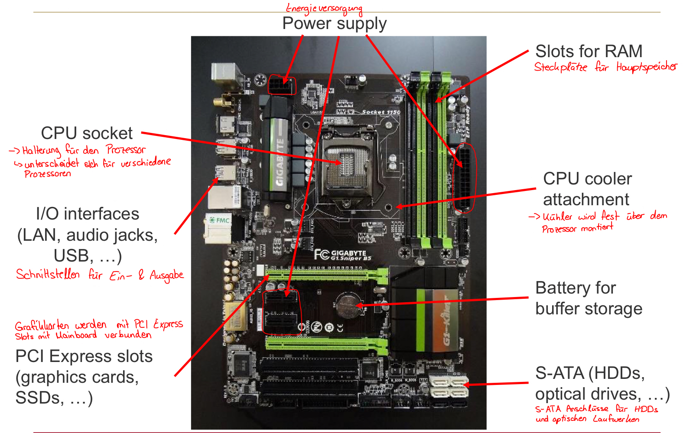
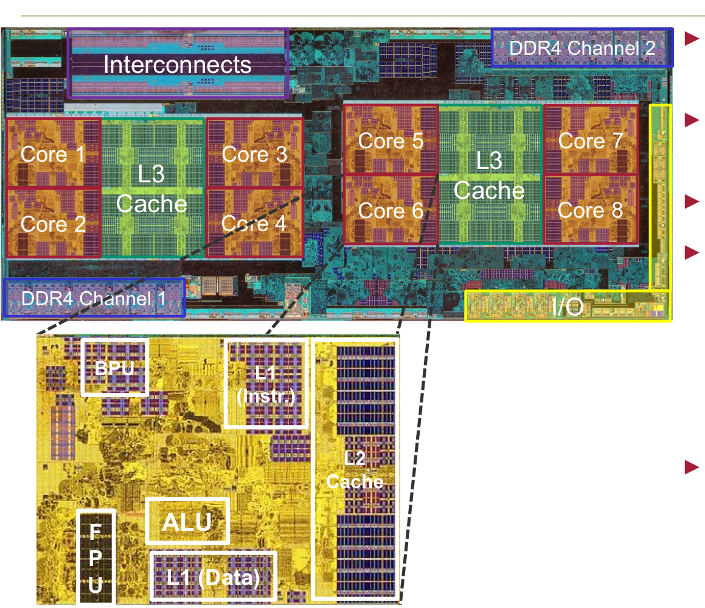

<div class="block">
  <div class="container site-border">
    <h2>Interpreter vs Compiler</h2>
    <p>Interpreter übersetzen bei der Ausführung.</p>
    <p>
      Compiler übersetzen vor der Ausführung. Sie übersetzen Programme in
      Anweisungen, die die Hardware ausführen kann.
    </p>
    <p>
      HTML wird vom Browser geparst und in eine DOM Struktur umgewandelt. CSS
      wird vom Browser geparst und in eine CSSOM Struktur umgewandelt und auf
      DOM angewendet.
    </p>
    <h2>Betriebssystem</h2>
    <p>
      Ist ein Überwachungsprogramm, welches das Benutzerprogramm mit der
      Hardware verbindet.
    </p>
    <h2>Zeichensätze</h2>
    <h3>ASCII (American Standard Code for Information Interchange)</h3>
    <p>128 Zeichen, benutzt 7 bits</p>

    <h3>ISO / IEC 8859 Standard</h3>
    <p>
      stellt 15 Zeichensätze zur Verfügung und unterstützt alle europäischen
      Sprachen. Erweiterung von ASCII auf 8 bits
    </p>

    <h3>Unicode</h3>
    <p>
      enthält für alle sinnvollen Schriftzeichen / Textelemente einen digitalen
      Code
    </p>

    <h3>USC Transformation Format (UTF)</h3>
    <p>Repräsentiert alle Unicode Zeichen. Variable Längenkodierung.</p>
    <h2>Die Komponenten eines Computers</h2>
    <ul>
      <li>Eingang (Input)</li>
      <li>Ausgang (Output)</li>
      <li>Memory (Hauptspeicher)</li>
      <li>Datenpfad (Rechenwerk)</li>

      <h3>Zusammenspiel von IPv4 und IPv6</h3>
      <p>
        IPv4 und IPv6 sind zwei unterschiedliche Netzwerkprotokolle. IPv4
        verwendet 32-Bit-Adressen, IPv6 verwendet 128-Bit-Adressen. Ein reines
        IPv4-Gerät kann nicht automatisch mit einem reinen IPv6-Gerät
        kommunizieren, weil beide Protokolle unterschiedliche Header,
        Adressformate und Kontrollmechanismen verwenden. Für die Übergangszeit
        wurden deshalb mehrere Verfahren entwickelt: Dual Stack, Tunneling und
        Header Translation.
      </p>

      <h3>Dual Stack</h3>
      <p>
        Bei Dual Stack unterstützt ein Gerät IPv4 und IPv6 gleichzeitig. Es hat
        mindestens eine IPv4-Adresse und eine IPv6-Adresse und kann je nach Ziel
        das passende Protokoll verwenden. Auch Betriebssysteme, Router,
        Firewalls, DNS-Server und Anwendungen müssen dafür IPv4 und IPv6
        unterstützen.
      </p>
      <p>
        Ruft ein Client beispielsweise eine Domain auf, kann DNS sowohl einen
        A-Record mit einer IPv4-Adresse als auch einen AAAA-Record mit einer
        IPv6-Adresse liefern. Der Client versucht normalerweise, IPv6 zu nutzen,
        wenn eine funktionierende IPv6-Verbindung vorhanden ist. Ist IPv6 nicht
        erreichbar, kann er auf IPv4 zurückgreifen. Verfahren wie Happy Eyeballs
        testen IPv4 und IPv6 teilweise parallel, damit eine langsame oder
        fehlerhaft konfigurierte IPv6-Verbindung den Seitenaufruf nicht unnötig
        verzögert.
      </p>
      <p>
        Bei Dual Stack wird das Paket nicht übersetzt. Für eine IPv4-Verbindung
        entsteht ein IPv4-Paket mit IPv4-Header. Für eine IPv6-Verbindung
        entsteht ein IPv6-Paket mit IPv6-Header. Router und Zielhost müssen
        jeweils dieselbe Protokollfamilie unterstützen.
      </p>
      <p>
        Der große Vorteil von Dual Stack ist die direkte Kommunikation ohne
        Übersetzung. Die Ende-zu-Ende-Eigenschaften bleiben weitgehend erhalten,
        und Anwendungen können beide Protokolle schrittweise unterstützen. Der
        Nachteil ist der höhere Verwaltungsaufwand: Adressierung, Routing,
        Firewalls, Monitoring und Fehleranalyse müssen für zwei Protokolle
        gepflegt werden. Außerdem löst Dual Stack keine Verbindung zwischen
        einem reinen IPv4-Host und einem reinen IPv6-Host.
      </p>

      <h3>Tunneling</h3>
      <p>
        Beim Tunneling wird ein IP-Paket einer Protokollfamilie in ein Paket der
        anderen Protokollfamilie eingekapselt. Das innere Paket bleibt dabei
        unverändert. Ein Tunnel verbindet dadurch zwei Netzbereiche, die
        dasselbe Protokoll sprechen, obwohl dazwischen ein Netzwerk liegt, das
        dieses Protokoll nicht direkt unterstützt.
      </p>
      <p>
        Beim häufigen IPv6-over-IPv4-Tunneling wird ein vollständiges IPv6-Paket
        als Nutzdaten in ein IPv4-Paket eingefügt. Der äußere IPv4-Header wird
        von den IPv4-Routern für die Weiterleitung verwendet. Am Ende des
        Tunnels entfernt der Tunnel-Endpunkt den äußeren IPv4-Header und leitet
        das ursprüngliche IPv6-Paket weiter. Für das IPv6-Paket wirkt es so, als
        gäbe es zwischen den Tunnel-Endpunkten eine direkte IPv6-Verbindung.
      </p>
      <p>
        Das Prinzip funktioniert auch umgekehrt als IPv4-over-IPv6. Dabei wird
        ein IPv4-Paket in ein IPv6-Paket eingekapselt, damit es ein IPv6-Netz
        durchqueren kann. Die Tunnel-Endpunkte übernehmen das Ein- und
        Auspacken; normale Zwischenrouter müssen nur den äußeren Header
        verstehen.
      </p>
      <p>
        Ein Tunnel benötigt zwei erreichbare Tunnel-Endpunkte und eine passende
        Konfiguration. Beispiele sind manuelle IPv6-in-IPv4-Tunnel, GRE-Tunnel,
        6in4 und bestimmte Providerverfahren wie 6rd oder DS-Lite. Bei DS-Lite
        werden IPv4-Pakete für ein IPv4-only-Kundennetz durch ein IPv6-Provider-
        netz zu einem zentralen IPv4-NAT-Gateway transportiert.
      </p>
      <p>
        Tunneling übersetzt die Adressen des inneren Pakets nicht. Deshalb
        bleiben die ursprünglichen IPv4- oder IPv6-Adressen im inneren Header
        erhalten. Allerdings entsteht zusätzlicher Overhead durch den äußeren
        Header. Die effektive MTU wird kleiner, und Path MTU Discovery muss
        korrekt funktionieren. Firewalls müssen außerdem den Tunnelverkehr
        erlauben und überwachen.
      </p>
      <p>
        Tunneling verbindet also Netze, aber nicht automatisch einzelne IPv4-
        und IPv6-Anwendungen miteinander. Ein IPv4-Host kann durch einen
        IPv6-Tunnel weiterhin nur IPv4-Ziele erreichen. Für eine direkte
        Kommunikation mit einem reinen IPv6-Ziel ist zusätzlich eine Übersetzung
        oder ein Dual-Stack- Gateway erforderlich.
      </p>

      <h3>Header Translation</h3>
      <p>
        Bei der Header Translation, also der Übersetzung von Headern, wird ein
        Paket an einer Übergangsstelle von IPv4 nach IPv6 oder von IPv6 nach
        IPv4 umgewandelt. Der Übersetzer entfernt den ursprünglichen IP-Header
        und erstellt einen Header der anderen Protokollfamilie. Dabei müssen
        Adressen, Längenangaben, TTL beziehungsweise Hop Limit, Next Header
        beziehungsweise Protocol und Prüfsummen passend angepasst werden.
      </p>
      <p>
        Ein typisches Verfahren ist NAT64. Ein IPv6-only-Client möchte dabei
        einen IPv4-only-Server erreichen. Der Client verwendet eine
        IPv6-Zieladresse, die eine IPv4-Adresse abbildet. Das NAT64-Gateway
        nimmt das IPv6-Paket entgegen, erzeugt daraus ein IPv4-Paket und leitet
        es an den IPv4-Server weiter. Die Antwort des Servers wird am Gateway
        wieder in ein IPv6-Paket zurückübersetzt.
      </p>
      <p>
        Damit der Client den IPv4-Server über einen Namen erreichen kann, wird
        häufig DNS64 eingesetzt. DNS64 erzeugt aus einem vorhandenen A-Record
        künstlich einen passenden AAAA-Record. Der IPv6-Client fragt dadurch
        eine IPv6-Adresse ab, obwohl das eigentliche Ziel nur eine IPv4-Adresse
        besitzt. Das NAT64-Gateway erkennt diese spezielle Zieladresse und
        übersetzt sie in die ursprüngliche IPv4-Adresse.
      </p>
      <p>
        Bei einer zustandsbehafteten Übersetzung speichert das Gateway eine
        Zuordnung zwischen IPv6-Verbindung und IPv4-Verbindung. Dazu gehören
        unter anderem Quelladresse, Zieladresse, Transportprotokoll und Ports.
        So können Antwortpakete der richtigen IPv6-Verbindung zugeordnet werden.
        Dieses Prinzip ähnelt NAT bei IPv4, übersetzt aber zusätzlich zwischen
        zwei unterschiedlichen IP-Versionen.
      </p>
      <p>
        Header Translation benötigt keinen Tunnel durch das Zielnetz. Deshalb
        kann ein IPv6-only-Netz mit IPv4-only-Diensten kommunizieren. Der
        Nachteil ist, dass die Kommunikation nicht vollständig Ende zu Ende mit
        derselben Protokollversion stattfindet. Das Gateway muss den Verkehr
        verstehen und kann dadurch zum zentralen Fehler-, Performance- oder
        Ausfallpunkt werden.
      </p>
      <p>
        Nicht jedes Protokoll lässt sich problemlos übersetzen. Anwendungen, die
        IP-Adressen direkt in ihre Nutzdaten schreiben, eigene Kontrollkanäle
        verwenden oder ungewöhnliche Transportprotokolle einsetzen, können eine
        spezielle Anpassung benötigen. DNS64/NAT64 funktioniert daher besonders
        gut mit Anwendungen, die Hostnamen verwenden und IPv6 korrekt
        unterstützen.
      </p>

      <h3>Vergleich der Übergangsverfahren</h3>
      <p>
        Dual Stack betreibt IPv4 und IPv6 parallel und ist technisch meist die
        direkteste Lösung, benötigt aber zwei vollständig verwaltete
        Protokollstapel. Tunneling transportiert ein Protokoll durch ein
        Netzwerk der anderen Version, verändert das innere Paket jedoch nicht.
        Header Translation wandelt das Paket an einer Übergangsstelle in die
        jeweils andere Protokollversion um und ermöglicht dadurch Kommunikation
        zwischen IPv6-only- und IPv4-only-Systemen.
      </p>
      <p>
        In der Praxis werden die Verfahren auch kombiniert. Ein Provider kann
        beispielsweise ein IPv6-only-Zugangsnetz mit IPv4-Diensten über NAT64
        verbinden und gleichzeitig IPv4-Verkehr über DS-Lite tunneln. Welche
        Technik eingesetzt wird, hängt davon ab, ob Endgeräte beide Protokolle
        beherrschen, ob die Infrastruktur IPv6 unterstützt und ob alte
        IPv4-Dienste weiterhin erreichbar sein müssen.
      </p>
      <li>Steuerung (Steuerwerk)</li>
    </ul>
    
    <h3>Aufbau eines Mainboards</h3>
    

    <h3>Prozessoransicht AMD Rison 7000x</h3>
    
    <p>
      Der AMD Rison 7000x hat 8 Kerne in 2 Core Komplexe (Core 1-4 und Core
      5-8). Dazu gibt es 3 Level von Caches (L1, L2 pro Core). Diese beiden sind
      deutlich schneller als normale Arbeitsspeicher. L3 sind etwas langsamer,
      aber dafür größer als L1, L2 Cache.
    </p>
    <h2>Maschinentaktrate</h2>
    <p>
      Die Maschinentaktrate ist eine grundlegende Größe bei der Schaltung.
      Maschinen laufen in Taktzyklen. Dabei ist 1 Hz = 1 Schwingung pro Sekunde,
      also eine Periode wird in 1sek abgearbeitet. 1GHz ist dabei 1.000.000.000
      Schwingungen pro Sekunde.
    </p>
    <p>
      Eine Hohe Taktrate führt zu hoher Temperatur, daher wird entweder die
      Anzahl der Kerne pro Chip bei jeder Generation erhöht oder eine dynamische
      Taktrate, bei der bei hoher Temperatur die Taktrate gesenkt wird.
    </p>

    <h2>Prozess</h2>
    <p>Ein Prozess meint das Ausführen eines Programms.</p>

    <h2>Thread</h2>
    <p>
      Ein Thread ist ein leichtgewichtiger Prozess, also ein Teil eines
      Prozesses.
    </p>
    <p>
      Viele Threads zu einem Prozess nennt man auch multi-threading. Sie teilen
      sich die Ressourcen des Prozesses.
    </p>
    <h2>fork</h2>
    <p>
      Kopie eines Repositories auf GitHub wird erstellt, die unabhängig
      weiterentwickelt werden kann. Ein Fork kopiert den gesamten Code,
      Templates und AddOns.
    </p>
    <h2>NFC vs. NFD (Unicode-Normalisierung des "ä")</h2>
    <p>
      Files sind generell NFC-kodiert (ä = ein Zeichen, Bytes c3 a4) - identisch
      mit dem ä im href der Frontend.html. Eingefügte Files über den Finder sind
      wiederum NFD-kodiert (a + eigenständiger Kombinations-Trema-Akzent, Bytes
      61 cc 88). Das passiert typisch, wenn eine Datei per Finder (Drag & Drop)
      auf MacOS ins Dateisystem kopiert wird. APFS/Finder normalisieren Umlaute
      in Dateinamen automatisch zu NFD. Optisch sieht das exakt gleich aus, aber
      byte für byte ist es ein anderer String als das ä im HTML Quelltext. Ein
      Linux Webserver ist ein case- und byte-exaktes Dateisystem. Die URL, die
      der Browser aus dem href erzeugt, enthält die NFC-Bytes - die Datei auf
      dem Server heißt aber (nach dem rsync) NFD-Bytes. Für den Server sind das
      dann zwei unterschiedliche Dateinamen, somit 404, obwohl optisch alles
      richtig aussieht.
    </p>
    <p>
      Fix: Benenne Dateinamen niemals mit Umlauten. Wenn doch, dann muss die
      Datei mit dem Terminal nochmal umbenannt werden mit mv "Dateiname"
      "Dateiname". Das Terminal selbst erzeugt nämlich wieder NFC.
    </p>
    <h2>Metrische Dezimal vs. Binär Prefixe</h2>
    <p>
      Dezimal sind zB 200 Mb/s = 200 * 1000^2 bits pro Sekunde. b steht immer
      für Bit und steht für Übertragungsgeschwindigkeiten.
    </p>
    <p>
      Binär sind zB 1 TiB = 1 * 1024^4 bytes. B steht immer für Byte und steht
      für Speichergrößen.
    </p>
    <h2>Hardware</h2>
    <h3>Switch (Netzwerk Switch)</h3>
    <p>
      Eine Switch wird häufig für gezielte Datenübertragung genutzt. Sie sind
      zentrale Bestandteile moderner Netzwerke. Sie verbinden mehrere Geräte
      innerhalb eines Netzwerks miteinander. Der Switch empfängt Daten von einem
      Gerät und entscheidet, an welchen Netzwerkanschluss die Daten anhand der
      MAC Adresse gesendet werden müssen. Er erkennt anhand der MAC Adresse, das
      die Daten an Port 4 zB gesendet werden müssen. Eine Switch sitzt meistens
      zwischen Router und PC. Verbindet Endgeräte und auch andere Switches
      miteinander.
    </p>
    <p>
      Meistens steckt in einem Router direkt ein kleiner Switch drin. Internet
      -> Glasfaser/DSL -> Router -> Switch -> PC, TV, NAS
    </p>
  </div>
</div>
